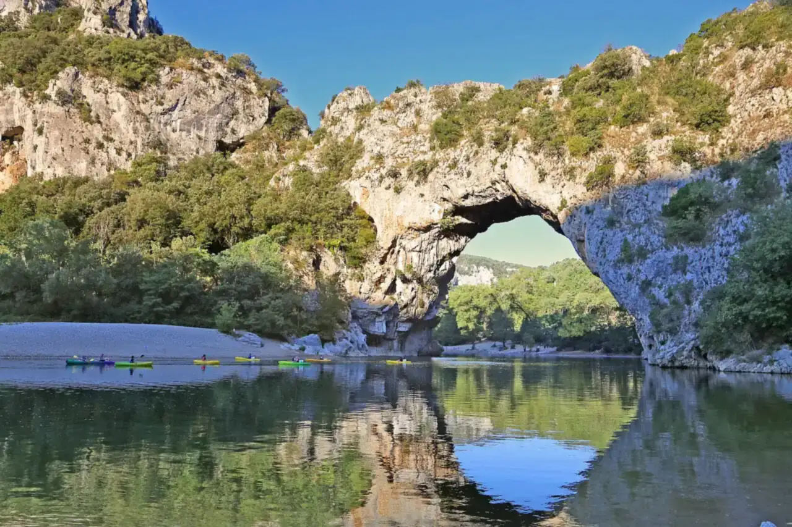

Pont d’Arc — Gorges de l’Ardèche
Vallon-Pont-d’Arc, Ardèche, France · kayak, baignade

Arche naturelle d’environ 54 m de haut qui enjambe l’Ardèche à l’entrée des gorges. C’est le point de passage de la descente classique en canoë-kayak, avec de grandes plages de galets pour se baigner.
- Lieu
- Vallon-Pont-d’Arc, Ardèche, France
- Niveau
- Débutant
- Activités
- kayak, baignade
- Type d'eau
- inland
- Coordonnées
- 44.38, 4.42 (position approximative du secteur)
Dangers à connaître
- Rapides et rochers sur le parcours, chavirages fréquents.
- Crues soudaines après les orages cévenols.
- Réserve naturelle des gorges : bivouac uniquement sur les aires autorisées.
Le conseil d'Ocean Buddy
Porte le gilet et range tes affaires dans un bidon étanche ; la descente complète des gorges se prévoit à la journée ou en deux jours avec bivouac réservé.
Ouvrir dans Ocean Buddy Télécharger sur l'App Store
Source : Fiche Ocean Buddy · septembre 2026 · à vérifier localement.